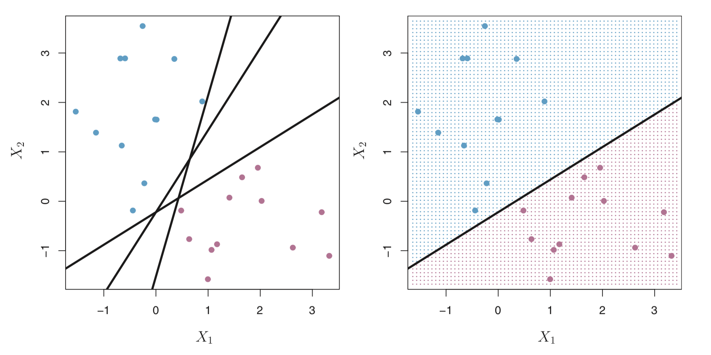
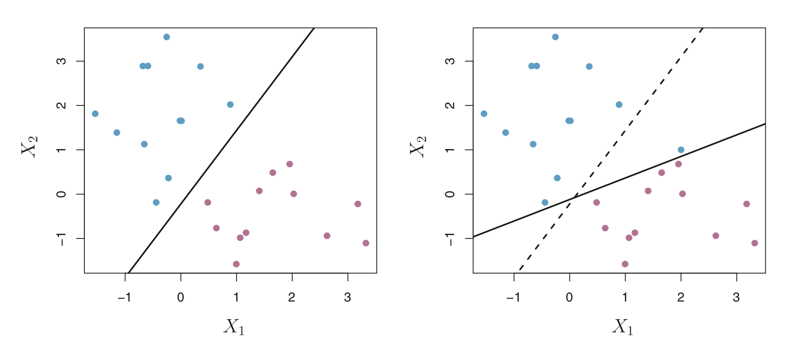
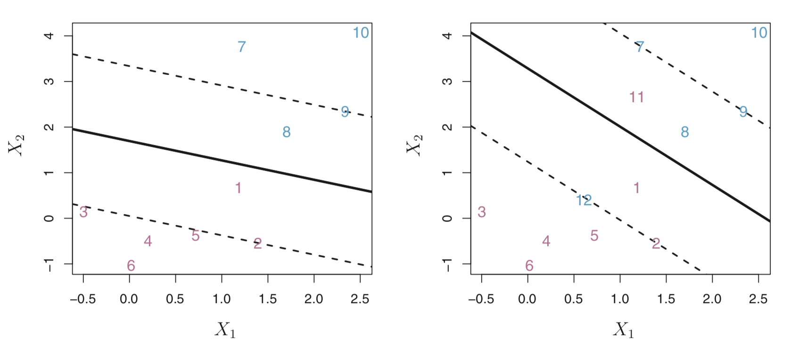
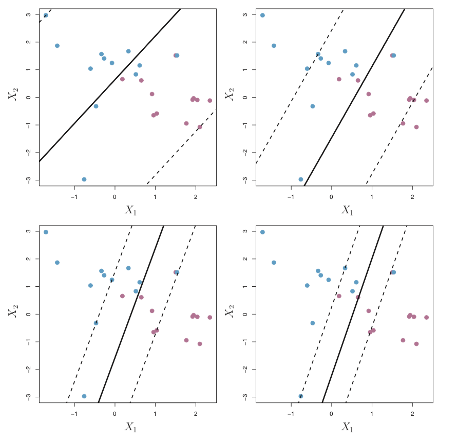
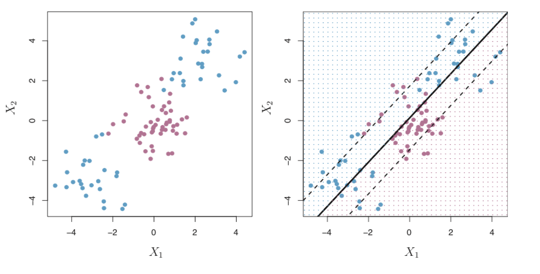
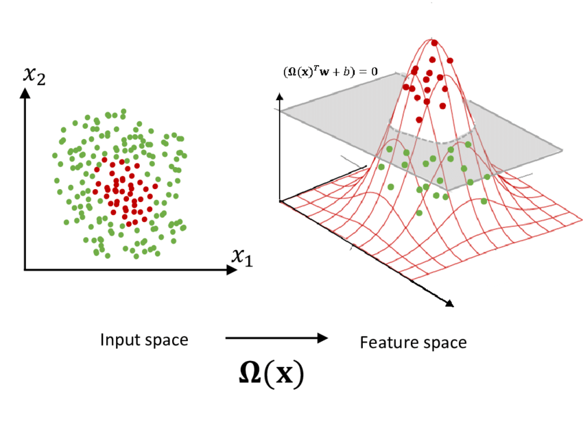
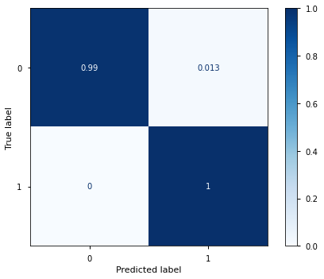
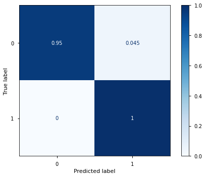

Support Vector Machines#
Adapted from Yish’s interpretation of Chapter 9 of Introduction to Statistical Learning in R
Support Vector Classifier#
SVMs approach the classification problem in a direct way - we try and find a plane that separates the classes in the feature space
If we cannot, we do one of the two things:
We soften what we mean by “separates”
We enlarge the feature space so that the separation is possible
Notes on Terminology:
Support vector machines are sometimes used as a general method that incorporate maximal margin classifier, support vector classifiers etc. However, strictly by definition, support vector machine is a support vector classifier utilized with non-linear kernel.
“When the support vector classifier is combined with a non-linear kernel such as (9.22), the resulting classifier is known as a support vector machine.” – P366, ISLR
Example of a boundary hyperplane in a two dimensional space:

Maximal Margin Classifier#
SVM tackles the problem of classification directly, in the sense that it does not compute a probabilistic model. Instead, it constructs a hyperplane to directly separate the classes.
For example:

However, the problem with this approach is that we can come up with infinite number of such hyperplanes as we can tilt the line back and forth and it would still serve the same purpose.
Therefore, we are using the hyperplane such that the it would be the farthest from training observations from either side. The intuition behind it is that if we have chosen a hyperplane that is far from the training observations, it would be far for the testing observations as well.
The distance between the training observations and the hyperplane is called the margin, and the classifier aims to find the maximal margin from the hyperplane that separates the training examples:

Soft Margin Classifier#
Even though the maximal margin classifier sounds like an intuitive idea and not too difficult to optimize for, it might not be desirable under two circumstances:
It will be sensitive to individual training observations
The algorithm will not converge if the training observations cannot be linearly separated.

What happens if we cannot come up with a hyperplane that perfectly separates the training observations like the ones above? The first solution is the soft margin classifier, where we can loosen up our definition of the margin.

Rather than seeking the largest possible margin so that every observation is not only on the correct side of the hyperplane but also on the correct side of the margin, we instead allow some observations to be on the incorrect side of the margin, or even on the incorrect side of the hyperplane.

In this case, the hyperparameter ε is known as the slack variables, which dictate how many training observations we allow to violate the rule of margins or even the hyperplane. The amount of slack is bounded by C accordingly.
The parameter εi tells us where the ith training observation is located.
If εi = 0, then we say the ith training observation is on the correct side of the margin;
If εi > 0, then we say it has violated the margin
If εi > 1, then it is on the wrong side of the hyperplane
The value C is the sum of ε across all i training observations. The parameter C controls the bias-variance tradeoff of the statistical technique. A high value of C meaning we are more tolerant of the violation, which in turn might give us a model that has high bias but low variance; however, a low value of C indicates low tolerance of the violation, potentially giving us more variance but less bias.
How do we determine the ideal value of C?

Note!
In scikit-learn implementation, c is defined as the inverse. A higher value of c is a smaller regularization or smaller penalty, whereas a lower value of c is a higher penalty.
Note! It is important to point out that in the support vector classfier (or SVM) in general, only the vectors on the margins are used for classification. They are called the “Support Vectors”
“The Kernel Trick”#
Sometimes we have training data that are not able to be separated even with softened margin:

The intuition to find the optimal fit is called feature space expansion:
First, we enlarge the feature space through the use of kernel
Fit a support vector classifier in the enlarged space
This results in nonlinear decision boundaries in the original space


Why do we know that enlarging the feature space makes the data more linearly separable? Cover’s Theorem.
Another view:

Implementation & Performance Comparison#
Docs: https://scikit-learn.org/stable/modules/generated/sklearn.svm.SVC.html
# imports
import pandas as pd
import numpy as np
import matplotlib.pyplot as plt
from sklearn.model_selection import train_test_split
from time import time
Original Smaller Dataset#
## ORIGINAL DATA
df0 = pd.read_csv('data/data_banknote_authentication.csv', header = None)
# our data needs column names
headers = ["Variance", "Skewness", "Curtosis", "Entropy", "Class"]
df0.columns = headers
display(df0.head(),df0.info())
<class 'pandas.core.frame.DataFrame'>
RangeIndex: 1372 entries, 0 to 1371
Data columns (total 5 columns):
# Column Non-Null Count Dtype
--- ------ -------------- -----
0 Variance 1372 non-null float64
1 Skewness 1372 non-null float64
2 Curtosis 1372 non-null float64
3 Entropy 1372 non-null float64
4 Class 1372 non-null int64
dtypes: float64(4), int64(1)
memory usage: 53.7 KB
| Variance | Skewness | Curtosis | Entropy | Class | |
|---|---|---|---|---|---|
| 0 | 3.62160 | 8.6661 | -2.8073 | -0.44699 | 0 |
| 1 | 4.54590 | 8.1674 | -2.4586 | -1.46210 | 0 |
| 2 | 3.86600 | -2.6383 | 1.9242 | 0.10645 | 0 |
| 3 | 3.45660 | 9.5228 | -4.0112 | -3.59440 | 0 |
| 4 | 0.32924 | -4.4552 | 4.5718 | -0.98880 | 0 |
None
# define X and y, then train test split
X0 = df0.drop('Class', axis=1)
y0 = df0['Class']
X_train0, X_test0, y_train0, y_test0 = train_test_split(X0, y0, test_size = 0.20)
X_train0
| Variance | Skewness | Curtosis | Entropy | |
|---|---|---|---|---|
| 922 | -1.4174 | -2.2535 | 1.51800 | 0.61981 |
| 453 | 3.5761 | 9.7753 | -3.97950 | -3.46380 |
| 697 | 3.6077 | 6.8576 | -1.16220 | 0.28231 |
| 1245 | -1.1306 | 1.8458 | -1.35750 | -1.38060 |
| 548 | 1.8533 | 6.1458 | 1.01760 | -2.04010 |
| ... | ... | ... | ... | ... |
| 48 | 3.9102 | 6.0650 | -2.45340 | -0.68234 |
| 886 | -1.6514 | -8.4985 | 9.11220 | 1.23790 |
| 683 | 4.3365 | -3.5840 | 3.68840 | 0.74912 |
| 605 | 1.0652 | 8.3682 | -1.40040 | -1.65090 |
| 939 | -2.0529 | 3.8385 | -0.79544 | -1.21380 |
1097 rows × 4 columns
📙 Predicting Recidivism with SVC#
OBTAIN#
Iowa has a major problem with recidivism, where ~38% of all inmates released from prison wind up back in jail after returning to a life of crime (AKA recidivism).
Dataset contains information on released prisoners and if they returned to prison within 3 years of being release.
Dataset can be found on Kaggle, which was extracted from Iowa’s data portal.
We will be using a partially pre-processed version of the dataset (columns have been renamed/simplified).

%load_ext autoreload
%autoreload 2
import functions_022221FT as fn
import matplotlib.pyplot as plt
import seaborn as sns
import pandas as pd
import numpy as np
import plotly.express as px
import plotly.graph_objects as go
import warnings
warnings.filterwarnings('ignore')
plt.style.use('seaborn-notebook')
renamed_data = 'https://raw.githubusercontent.com/jirvingphd/dsc-3-final-project-online-ds-ft-021119/master/datasets/Iowa_Prisoners_Renamed_Columns_fsds_100719.csv'
df = pd.read_csv(renamed_data,index_col=0)
## Drop unwanted cols using year
df = df.drop(columns=['yr_released','report_year'])
display(df.head(),df.info())
<class 'pandas.core.frame.DataFrame'>
Int64Index: 26020 entries, 0 to 26019
Data columns (total 10 columns):
# Column Non-Null Count Dtype
--- ------ -------------- -----
0 race_ethnicity 25990 non-null object
1 age_released 26017 non-null object
2 crime_class 26020 non-null object
3 crime_type 26020 non-null object
4 crime_subtype 26020 non-null object
5 release_type 24258 non-null object
6 super_dist 16439 non-null object
7 recidivist 26020 non-null object
8 target_pop 26020 non-null object
9 sex 26017 non-null object
dtypes: object(10)
memory usage: 2.2+ MB
| race_ethnicity | age_released | crime_class | crime_type | crime_subtype | release_type | super_dist | recidivist | target_pop | sex | |
|---|---|---|---|---|---|---|---|---|---|---|
| 0 | Black - Non-Hispanic | 25-34 | C Felony | Violent | Robbery | Parole | 7JD | Yes | Yes | Male |
| 1 | White - Non-Hispanic | 25-34 | D Felony | Property | Theft | Discharged – End of Sentence | NaN | Yes | No | Male |
| 2 | White - Non-Hispanic | 35-44 | B Felony | Drug | Trafficking | Parole | 5JD | Yes | Yes | Male |
| 3 | White - Non-Hispanic | 25-34 | B Felony | Other | Other Criminal | Parole | 6JD | No | Yes | Male |
| 4 | Black - Non-Hispanic | 35-44 | D Felony | Violent | Assault | Discharged – End of Sentence | NaN | Yes | No | Male |
None
SCRUB#
Null values (fill or drop)
Data Types (finding categorical variables)
Inspect the value_counts/labels of categoricals
Scaling or lack-off
One hot encoding
## Check null values
# import missingno
# missingno.matrix(df)
# plt.show()
# null_check = pd.DataFrame({
# '#null':df.isna().sum(),
# '%null':round(df.isna().sum()/len(df)*100,2)
# })
# null_check
# ## inspect categories
# dashes = '---'*20
# for col in df.columns:
# print(dashes)
# print(f"Value Counts for {col}:")
# display(df[col].value_counts(dropna=False))
Feature Engineering#
race_ethnicity#
# df['race_ethnicity'].value_counts(dropna=False)
Simplify race and ethnicity down to race - (also tried separating race and ethnicity and using as 2 separate features).
# Defining Dictionary Map for race_ethnicity categories
race_ethnicity_map = {'White - Non-Hispanic':'White',
'Black - Non-Hispanic': 'Black',
'White - Hispanic' : 'Hispanic',
'American Indian or Alaska Native - Non-Hispanic' : 'American Native',
'Asian or Pacific Islander - Non-Hispanic' : 'Asian or Pacific Islander',
'Black - Hispanic' : 'Black',
'American Indian or Alaska Native - Hispanic':'American Native',
'White -' : 'White',
'Asian or Pacific Islander - Hispanic' : 'Asian or Pacific Islander',
'N/A -' : np.nan,
'Black -':'Black'}
df['race'] = df['race_ethnicity'].map(race_ethnicity_map)
df['race'].value_counts(dropna=False)
White 17596
Black 6148
Hispanic 1522
American Native 522
Asian or Pacific Islander 197
NaN 35
Name: race, dtype: int64
crime_class#
# df['crime_class'].value_counts()
After some research, we found that several of the less-frequent classes were actually equivalent to other classes. (e.g. ‘Special Sentence 2005’ -> ‘Sex Offender’,)
# Remapping
crime_class_map = {'Other Felony (Old Code)': np.nan ,#or other felony
'Other Misdemeanor':np.nan,
'Felony - Mandatory Minimum':np.nan, # if minimum then lowest sentence == D Felony
'Special Sentence 2005': 'Sex Offender',
'Other Felony' : np.nan ,
'Sexual Predator Community Supervision' : 'Sex Offender',
'D Felony': 'D Felony',
'C Felony' :'C Felony',
'B Felony' : 'B Felony',
'A Felony' : 'A Felony',
'Aggravated Misdemeanor':'Aggravated Misdemeanor',
'Felony - Enhancement to Original Penalty':'Felony - Enhanced',
'Felony - Enhanced':'Felony - Enhanced' ,
'Serious Misdemeanor':'Serious Misdemeanor',
'Simple Misdemeanor':'Simple Misdemeanor'}
df['crime_class'] = df['crime_class'].map(crime_class_map)
df['crime_class'].value_counts(dropna=False)
D Felony 10487
C Felony 6803
Aggravated Misdemeanor 4930
B Felony 1765
Felony - Enhanced 1753
Serious Misdemeanor 155
Sex Offender 100
NaN 20
A Felony 4
Simple Misdemeanor 3
Name: crime_class, dtype: int64
age_released#
df['age_released'].value_counts(dropna=False)
25-34 9554
35-44 6223
Under 25 4590
45-54 4347
55 and Older 1303
NaN 3
Name: age_released, dtype: int64
# Mapping age_map onto 'age_released'
# Encoding age groups as ordinal
age_ranges = ('Under 25','25-34', '35-44','45-54','55 and Older')
age_numbers = (20,30,40,50,65)
age_num_map = dict(zip(age_ranges,age_numbers))
age_num_map
{'Under 25': 20, '25-34': 30, '35-44': 40, '45-54': 50, '55 and Older': 65}
df['age_number'] = df['age_released'].map(age_num_map)
df['age_number'].value_counts(dropna=False)
30.0 9554
40.0 6223
20.0 4590
50.0 4347
65.0 1303
NaN 3
Name: age_number, dtype: int64
## saving list of features thaat have been replaced wiht engineered nes
drop_cols = ['age_released','race_ethnicity']
Train-Test-Split#
from sklearn.model_selection import train_test_split
y = df['recidivist'].map({'Yes':1,"No":0})
X = df.drop(columns=['recidivist',*drop_cols])
## Train test split
X_tr, X_te, y_tr,y_te = train_test_split(X,y,test_size=.25)
# random_state=3210)#,stratify=y)
y_tr.value_counts(normalize=True)
0 0.665232
1 0.334768
Name: recidivist, dtype: float64
Pipelnes and ColumnTransformer#
from sklearn.pipeline import Pipeline
from sklearn.impute import SimpleImputer
from sklearn.preprocessing import StandardScaler, OneHotEncoder,MinMaxScaler
from sklearn.compose import ColumnTransformer
X_tr.isna().sum()
crime_class 16
crime_type 0
crime_subtype 0
release_type 1317
super_dist 7122
target_pop 0
sex 1
race 25
age_number 1
dtype: int64
from sklearn import set_config
set_config(display='diagram')
## saving list of numeric vs categorical feature
num_cols = list(X_tr.select_dtypes('number').columns)
cat_cols = list(X_tr.select_dtypes('object').columns)
num_cols,cat_cols
(['age_number'],
['crime_class',
'crime_type',
'crime_subtype',
'release_type',
'super_dist',
'target_pop',
'sex',
'race'])
## create pipelines and column transformer
num_transformer = Pipeline(steps=[
('imputer',SimpleImputer(strategy='median')),
('scale',MinMaxScaler())
])
cat_transformer = Pipeline(steps=[
('imputer',SimpleImputer(strategy='constant',fill_value='MISSING')),
('encoder',OneHotEncoder(sparse=False,handle_unknown='ignore'))])
## COMBINE BOTH PIPELINES INTO ONE WITH COLUMN TRANSFORMER
preprocessor=ColumnTransformer(transformers=[
('num',num_transformer,num_cols),
('cat',cat_transformer,cat_cols)])
preprocessor
ColumnTransformer(transformers=[('num',
Pipeline(steps=[('imputer',
SimpleImputer(strategy='median')),
('scale', MinMaxScaler())]),
['age_number']),
('cat',
Pipeline(steps=[('imputer',
SimpleImputer(fill_value='MISSING',
strategy='constant')),
('encoder',
OneHotEncoder(handle_unknown='ignore',
sparse=False))]),
['crime_class', 'crime_type', 'crime_subtype',
'release_type', 'super_dist', 'target_pop',
'sex', 'race'])])['age_number']
SimpleImputer(strategy='median')
MinMaxScaler()
['crime_class', 'crime_type', 'crime_subtype', 'release_type', 'super_dist', 'target_pop', 'sex', 'race']
SimpleImputer(fill_value='MISSING', strategy='constant')
OneHotEncoder(handle_unknown='ignore', sparse=False)
## Fit preprocessing pipeline on training data and pull out the feature names and X_cols
preprocessor.fit(X_tr)
## Use the encoder's .get_feature_names
cat_features = list(preprocessor.named_transformers_['cat'].named_steps['encoder']\
.get_feature_names(cat_cols))
X_cols = num_cols+cat_features
## Transform X_traian,X_test and remake dfs
X_train_df = pd.DataFrame(preprocessor.transform(X_tr),
index=X_tr.index, columns=X_cols)
X_test_df = pd.DataFrame(preprocessor.transform(X_te),
index=X_te.index, columns=X_cols)
## Tranform X_train and X_test and make into DataFrames
X_train_df
| age_number | crime_class_A Felony | crime_class_Aggravated Misdemeanor | crime_class_B Felony | crime_class_C Felony | crime_class_D Felony | crime_class_Felony - Enhanced | crime_class_MISSING | crime_class_Serious Misdemeanor | crime_class_Sex Offender | ... | target_pop_Yes | sex_Female | sex_MISSING | sex_Male | race_American Native | race_Asian or Pacific Islander | race_Black | race_Hispanic | race_MISSING | race_White | |
|---|---|---|---|---|---|---|---|---|---|---|---|---|---|---|---|---|---|---|---|---|---|
| 14599 | 0.000000 | 0.0 | 1.0 | 0.0 | 0.0 | 0.0 | 0.0 | 0.0 | 0.0 | 0.0 | ... | 1.0 | 1.0 | 0.0 | 0.0 | 0.0 | 0.0 | 0.0 | 0.0 | 0.0 | 1.0 |
| 21356 | 0.444444 | 0.0 | 0.0 | 0.0 | 1.0 | 0.0 | 0.0 | 0.0 | 0.0 | 0.0 | ... | 0.0 | 1.0 | 0.0 | 0.0 | 0.0 | 0.0 | 1.0 | 0.0 | 0.0 | 0.0 |
| 16195 | 1.000000 | 0.0 | 0.0 | 0.0 | 0.0 | 1.0 | 0.0 | 0.0 | 0.0 | 0.0 | ... | 1.0 | 0.0 | 0.0 | 1.0 | 0.0 | 0.0 | 1.0 | 0.0 | 0.0 | 0.0 |
| 5691 | 0.444444 | 0.0 | 0.0 | 0.0 | 1.0 | 0.0 | 0.0 | 0.0 | 0.0 | 0.0 | ... | 0.0 | 0.0 | 0.0 | 1.0 | 0.0 | 0.0 | 0.0 | 0.0 | 0.0 | 1.0 |
| 10998 | 0.222222 | 0.0 | 0.0 | 0.0 | 1.0 | 0.0 | 0.0 | 0.0 | 0.0 | 0.0 | ... | 0.0 | 0.0 | 0.0 | 1.0 | 0.0 | 0.0 | 1.0 | 0.0 | 0.0 | 0.0 |
| ... | ... | ... | ... | ... | ... | ... | ... | ... | ... | ... | ... | ... | ... | ... | ... | ... | ... | ... | ... | ... | ... |
| 8107 | 0.666667 | 0.0 | 1.0 | 0.0 | 0.0 | 0.0 | 0.0 | 0.0 | 0.0 | 0.0 | ... | 0.0 | 0.0 | 0.0 | 1.0 | 0.0 | 0.0 | 0.0 | 0.0 | 0.0 | 1.0 |
| 12105 | 0.222222 | 0.0 | 1.0 | 0.0 | 0.0 | 0.0 | 0.0 | 0.0 | 0.0 | 0.0 | ... | 1.0 | 0.0 | 0.0 | 1.0 | 0.0 | 0.0 | 0.0 | 0.0 | 0.0 | 1.0 |
| 24096 | 0.222222 | 0.0 | 1.0 | 0.0 | 0.0 | 0.0 | 0.0 | 0.0 | 0.0 | 0.0 | ... | 1.0 | 1.0 | 0.0 | 0.0 | 0.0 | 0.0 | 1.0 | 0.0 | 0.0 | 0.0 |
| 577 | 0.444444 | 0.0 | 0.0 | 1.0 | 0.0 | 0.0 | 0.0 | 0.0 | 0.0 | 0.0 | ... | 1.0 | 1.0 | 0.0 | 0.0 | 0.0 | 0.0 | 0.0 | 0.0 | 0.0 | 1.0 |
| 7296 | 0.666667 | 0.0 | 0.0 | 0.0 | 1.0 | 0.0 | 0.0 | 0.0 | 0.0 | 0.0 | ... | 0.0 | 0.0 | 0.0 | 1.0 | 0.0 | 0.0 | 1.0 | 0.0 | 0.0 | 0.0 |
19515 rows × 77 columns
Resampling with SMOTENC#
from imblearn.over_sampling import SMOTE,SMOTENC
cat_features[:5]
['crime_class_A Felony',
'crime_class_Aggravated Misdemeanor',
'crime_class_B Felony',
'crime_class_C Felony',
'crime_class_D Felony']
## Save list of trues and falses for each cols
smote_feats = [False]*len(num_cols) +[True]*len(cat_features)
# smote_feats
smote = SMOTENC(smote_feats)
X_train_sm,y_train_sm = smote.fit_sample(X_train_df,y_tr)
y_train_sm.value_counts()
1 12982
0 12982
Name: recidivist, dtype: int64
📙 MODEL#
⫚ Selecting the Final Dataset for Modeling#
The following cell determines which dataset is used for modeling. Modify the
PRISONERSandRESAMPLED_PRISONERScorrespondingly
If
PRISONERS== False:Use original smaller bank-note dataset
If
PRISONERS== True:If
RESAMPLED_PRISONERS== False:Use original imbalanced prisoners dataset
If
RESAMPLED_PRISONERS== True:Use resampled training dataset.
## Setting X_train/X_test
PRISONERS = False
RESAMPLED_PRISONERS = False
if PRISONERS==False:
print('[!] Using original dataset.')
X_train = X_train0.copy()
y_train = y_train0.copy()
X_test = X_test0
y_test = y_test0
else:
if RESAMPLED_PRISONERS==True:
print('[!] Using resampled Iowa prisoners dataset.')
X_train = X_train_sm#.copy()
y_train = y_train_sm#.copy()
else:
print('[!] Using imbalanced Iowa prisoners dataset .')
X_train = X_train_df
y_train = y_tr
## Rename X,y test
X_test = X_test_df
y_test = y_te
# print('\tX_train and X_test:')
# print(X_train.shape, X_test.shape)
# print('\ty_train and y_test')
# print(y_train.shape,y_test.shape)
print(f"\nX_train shape: {X_train.shape}")
print('\ny_train class balance:')
print(y_train.value_counts())
[!] Using original dataset.
X_train shape: (1097, 4)
y_train class balance:
0 608
1 489
Name: Class, dtype: int64
First: Linear Kernel#
from sklearn.svm import SVC
tic = time() #timing!
svc_linear = SVC(kernel='linear', C=1)
svc_linear.fit(X_train, y_train)
y_pred_train = svc_linear.predict(X_train)
y_pred_test = svc_linear.predict(X_test)
toc = time()
print(f"Run time is {toc-tic} seconds")
Run time is 0.03623676300048828 seconds
# how'd we do?
from sklearn.metrics import classification_report, plot_confusion_matrix , accuracy_score
print(classification_report(y_test, y_pred_test))
print(f"Train accuracy: {accuracy_score(y_train, y_pred_train):.4f}")
print(f"Test accuracy: {accuracy_score(y_test, y_pred_test):.4f}")
plot_confusion_matrix(svc_linear, X_test, y_test,cmap='Blues',normalize='true')
plt.show()
precision recall f1-score support
0 1.00 0.99 0.99 154
1 0.98 1.00 0.99 121
accuracy 0.99 275
macro avg 0.99 0.99 0.99 275
weighted avg 0.99 0.99 0.99 275
Train accuracy: 0.9881
Test accuracy: 0.9927

Now: RBF#
tic = time() #timing!
svc_rbf = SVC(kernel='rbf', C=1, gamma='scale') # using all default values here
svc_rbf.fit(X_train, y_train)
y_pred_train = svc_rbf.predict(X_train)
y_pred_test = svc_rbf.predict(X_test)
toc = time()
print(f"Run time is {toc-tic} seconds")
Run time is 0.023016929626464844 seconds
# how'd we do?
print(classification_report(y_test, y_pred_test))
print(f"Train accuracy: {accuracy_score(y_train, y_pred_train):.4f}")
print(f"Test accuracy: {accuracy_score(y_test, y_pred_test):.4f}")
plot_confusion_matrix(svc_rbf, X_test, y_test,cmap='Blues',normalize='true')
plt.show()
precision recall f1-score support
0 1.00 1.00 1.00 154
1 1.00 1.00 1.00 121
accuracy 1.00 275
macro avg 1.00 1.00 1.00 275
weighted avg 1.00 1.00 1.00 275
Train accuracy: 1.0000
Test accuracy: 1.0000
And a Polynomial Kernel for good measure#
tic = time() #timing!
svc_poly = SVC(kernel='poly', C=1, gamma='scale', degree=3) # using mostly default values here
svc_poly.fit(X_train, y_train)
y_pred_train = svc_poly.predict(X_train)
y_pred_test = svc_poly.predict(X_test)
toc = time()
print(f"Run time is {toc-tic} seconds")
Run time is 0.03173494338989258 seconds
# how'd we do?
print(classification_report(y_test, y_pred_test))
print(f"Train accuracy: {accuracy_score(y_train, y_pred_train):.4f}")
print(f"Test accuracy: {accuracy_score(y_test, y_pred_test):.4f}")
plot_confusion_matrix(svc_poly, X_test, y_test,cmap='Blues',normalize='true')
plt.show()
precision recall f1-score support
0 1.00 0.95 0.98 154
1 0.95 1.00 0.97 121
accuracy 0.97 275
macro avg 0.97 0.98 0.97 275
weighted avg 0.98 0.97 0.97 275
Train accuracy: 0.9663
Test accuracy: 0.9745

Adjusting C?#
for c in [.01, 1, 100]:
svc_c = SVC(kernel='linear', C=c, gamma='scale') # going linear again
svc_c.fit(X_train, y_train)
y_pred_train = svc_c.predict(X_train)
y_pred_test = svc_c.predict(X_test)
# how'd we do?
print("-----")
print(f'Results at C = {c}')
print(classification_report(y_test, y_pred_test))
print(f"Train accuracy: {accuracy_score(y_train, y_pred_train):.4f}")
print(f"Test accuracy: {accuracy_score(y_test, y_pred_test):.4f}")
plot_confusion_matrix(svc_c, X_test, y_test,cmap='Blues',normalize='true')
plt.show()
-----
Results at C = 0.01
precision recall f1-score support
0 1.00 0.98 0.99 154
1 0.98 1.00 0.99 121
accuracy 0.99 275
macro avg 0.99 0.99 0.99 275
weighted avg 0.99 0.99 0.99 275
Train accuracy: 0.9809
Test accuracy: 0.9891
-----
Results at C = 1
precision recall f1-score support
0 1.00 0.99 0.99 154
1 0.98 1.00 0.99 121
accuracy 0.99 275
macro avg 0.99 0.99 0.99 275
weighted avg 0.99 0.99 0.99 275
Train accuracy: 0.9881
Test accuracy: 0.9927
-----
Results at C = 100
precision recall f1-score support
0 1.00 0.99 0.99 154
1 0.98 1.00 0.99 121
accuracy 0.99 275
macro avg 0.99 0.99 0.99 275
weighted avg 0.99 0.99 0.99 275
Train accuracy: 0.9872
Test accuracy: 0.9927
Pros#
Good for datasets with more variables than observations
Robust against outliers
Good performance
Good off-the-shelf model in general for several scenarios
Can approximate complex non-linear functions
Cons#
Long training time required
Tuning required to determine optimal kernel for non-linear SVMs
Requirements#
Scaled features
Null values filled
Resources#
Appendix/IF there’s time#
Meta-Ensembles#
from sklearn.ensemble import StackingClassifier,VotingClassifier
Using dictionaries to record the training times of all models for all datasets#
Comparing training times across datasets and kernels.
# results = {}
# results['example'] = {'data':{'PRISONERS':PRISONERS,
# "REWSAMPLED":RESAMPLED_PRISONERS},
# 'time': None}